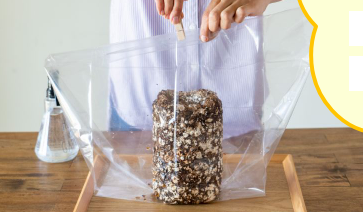

| 順番 | 写真 | 説明 | 詳細 |
|---|---|---|---|
| 1 | 栽培ブロックを袋から取り出す | 栽培ブロック(菌床)を袋から優しく取り出す。 | |
| 2 | 水で洗う | 栽培ブロックの表面をさっとこすらずに流水で洗い流す。 | |
| 3 |  | 栽培開始 | ブロックを付属の栽培袋に入れ、袋の口を半分折り込みクリップで留める。 |
| 4 | 水やり | 1日に1~2回程度、袋を開け霧吹きでブロック全体に水を与えて表面がしっとりと濡れた状態を保つ。しいたけが発生しても、気にせず水を与える。水やりが終わったら袋に戻す。 | |
| 5 | 発芽 | 栽培5日目前後で芽が出てくる。芽が密集しているところは、いくつか取り除いておくと残した芽が大きく育つ。 | |
| 6 | 収穫 | 環境にもよるが、通常発芽から2~5日で収穫可能となる。ハサミを使って、できるだけ柄の根本から収穫する。 |